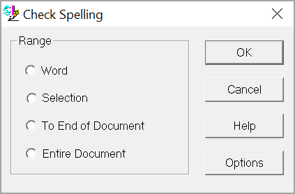
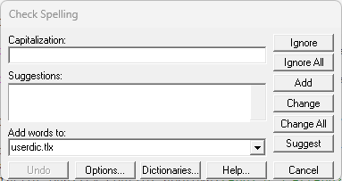

This command can also be executed from the SI Editor's Toolbar or by using the keyboard shortcut F7.
The Spell Check command is a fundamental feature in most editors and word processors and is crucial for maintaining the professional quality of technical specifications. Ensuring accurate spelling minimizes the risk of misunderstanding.

Range
- Word - Checks the spelling of the word located at the cursor position. If the text was selected before clicking the Spell Check command, this option will not be available.
- Selection - Checks the spelling of all selected text before activating the Spell Check command. If nothing has been selected, this option will not be available.
- To End of Document - Starts spell-checking from the cursor position and continues throughout the entire Section.
- Entire Document - Checks the spelling of the file from beginning to end.
 To customize your spell-checking results, click the Options button. For detailed information on these settings, refer to the Spell Check Options topic.
To customize your spell-checking results, click the Options button. For detailed information on these settings, refer to the Spell Check Options topic.
Check Spelling

The Check Spelling window appears if a word requiring your attention is detected. You can use the window to specify whether the word should be ignored, changed, or added to the user or engineering dictionary.
- Not in Dictionary - Indicates that a misspelled word was detected. The Spell Check identifies this word as misspelled because it was not located in its dictionary, or it was specifically set to be ignored through an Ignore action within the Options. You can edit the word in this box or select a Suggestion from the list, then click the Change button to correct the word, or click the Ignore button to skip the word.
- Suggestions - Shows a list containing suggested replacements for the word reported as misspelled. Subsequent clicks of the Suggest button may yield more suggestions. When there are no more suggestions available, the Suggest button will be disabled. The word selected in the Suggestions list will be used as the replacement when the Change or Change All buttons are clicked, unless the word in the Not in Dictionary field was edited.
- Add words to - Shows which user dictionary will receive new words when you click Add. Use the Dictionaries button to manage (open and close) other dictionaries.
buttons
- Ignore button - Prevents this specific misspelling from being flagged repeatedly, but highlights it if used again later.
- Ignore All button - Instructs the Spell Check to disregard this misspelling and any subsequent instances. You might use the Ignore All button if the word reported as a misspelling is spelled correctly. If the word is one you use frequently, you may decide to ignore it permanently by clicking the Add button.
- Add button - Adds the selected word to the dictionary selected in the Add words to list. Use the Add button if a correctly spelled word you use often is reported as a misspelling. If the word is not used frequently, you may want to click the Ignore or Ignore All buttons instead. This button is enabled only if a user dictionary has been selected in the Add words to list. When adding a word, the Check Spelling window provides additional options for Capitalization and Suggestions.

- Change button - Corrects the highlighted word using your edit or the suggested word, applying the change only to this instance. If you want this and all the following occurrences of the word replaced, click the Change All button.
- Change All button - Automatically fixes every occurrence of the highlighted word within your Section. If you've made an edit, that correction will be applied. If not, the suggested correction will be used. Use the Change button solely for the current instance. To prevent this word from being flagged in the future, add it to your dictionary by clicking the Add button.
- Suggest button - Searches with greater depth to find better replacement suggestions for the highlighted word. Each time you click the Suggest button, a deeper search is made. The Suggest button is disabled once all possible suggestions have been located.
- Undo button - Reverses one or more spelling corrections made during the current Spell Check session. Use it if you've accidentally altered a word or wish to revert to its original spelling after applying suggestions.
- Options button - Opens the Options window providing various Spell Check settings to customize functionality, including adjusting the speed and accuracy of spelling suggestions along with other program-wide settings.
- Dictionaries button - Opens the Dictionaries window to manage your dictionaries. Here you can perform various actions, including adding new words, deleting existing entries, importing word lists from external files, and exporting your custom word lists. Additionally, this window allows you to change the active Dictionary Files, as well as add, create entirely new, or remove existing dictionaries.
 To learn more about the Dictionaries, refer to the Spell Check Dictionaries topic.
To learn more about the Dictionaries, refer to the Spell Check Dictionaries topic.
Standard Windows Commands
 The Cancel button will close the window without recording any selections or changes entered.
The Cancel button will close the window without recording any selections or changes entered.
 The Help button will open the Help Topic for this window.
The Help button will open the Help Topic for this window.